Mechanics
Printed structure
Structure and joints are printed, so a revision costs an evening instead of a machine shop. The trade is stiffness. Printed parts flex, and flex becomes position error at the end of a long arm.
Robotics / work in progress
Home-built arm for running robot-learning experiments on something that is not a simulator. Printed structure, cycloidal reducers, servo drives, and all the wiring and calibration a simulated robot lets you ignore. Unfinished, and likely to stay that way a while.
Picks up from my MSc work - MuJoCo, OpenVR teleoperation, data capture, policy training - and asks the thing a simulator cannot: how much survives contact with a real, slightly wrong machine?
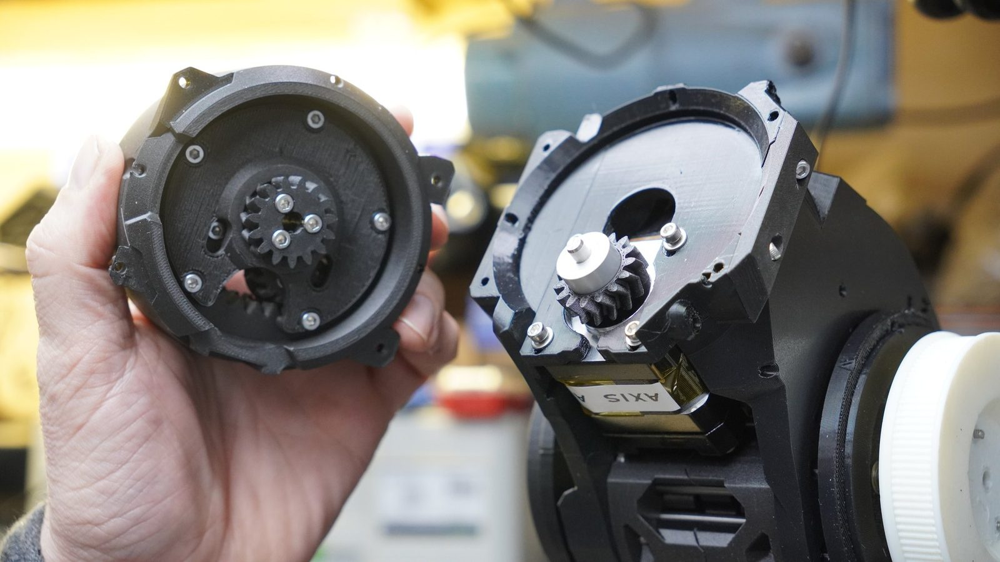
To be written up.
To be written up.
Mechanics
Structure and joints are printed, so a revision costs an evening instead of a machine shop. The trade is stiffness. Printed parts flex, and flex becomes position error at the end of a long arm.
Actuation
Printed cycloidal reducer at each joint rather than belts or a bought harmonic drive. High ratio, compact, printable at home. Costs you backlash, which I have not measured properly yet.
Electronics
Motor drive, position feedback, power and connectors, per joint, routed through a moving structure. Build the instrumentation carefully - without it a bad connector and a bad control loop look identical.
The controller side has already involved the kind of detail that makes hardware real: closed-loop stepper drives, CAN bus setup, baud-rate uncertainty, and deciding what to measure before assuming the motor is at fault.
Purpose
Somewhere to run policies trained in MuJoCo and find out what the simulator got wrong. Reality gap, measured rather than discussed.
Build loop
Short clips: printing parts, laying out actuators, bench electronics, hand-testing a joint, assembling the structure.
Still in progress. Every step took longer than the plan said, which is the pattern for the whole build.
The MK4, quietly manufacturing the next batch of problems. Most revisions cost an evening.
Bearings, printed lobes and fasteners, laid out.
Motor control on the bench. Cables, boards, meters, and checking what is actually moving.
Where the separate assemblies become one machine, and the tolerances start stacking up.
Later-stage metalwork, once it became clear that printed parts would not do everything.
Bench testing before trusting anything with leverage.
Reducer parts, fasteners and the usual small pile of decisions.
The arm getting another axis, and another chance to expose tolerances.
Still in progress. The useful sort of untidy.
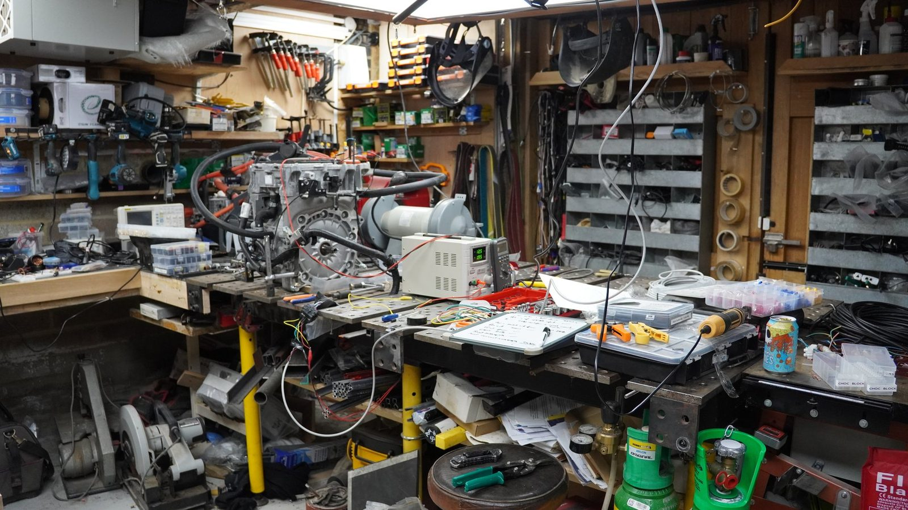
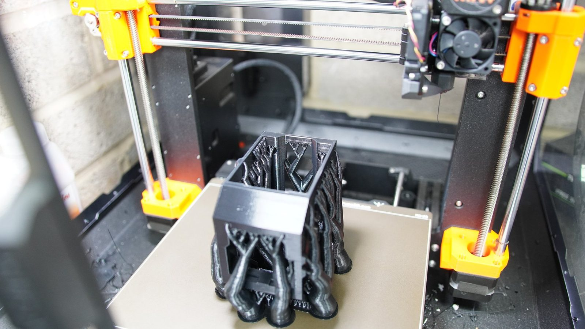
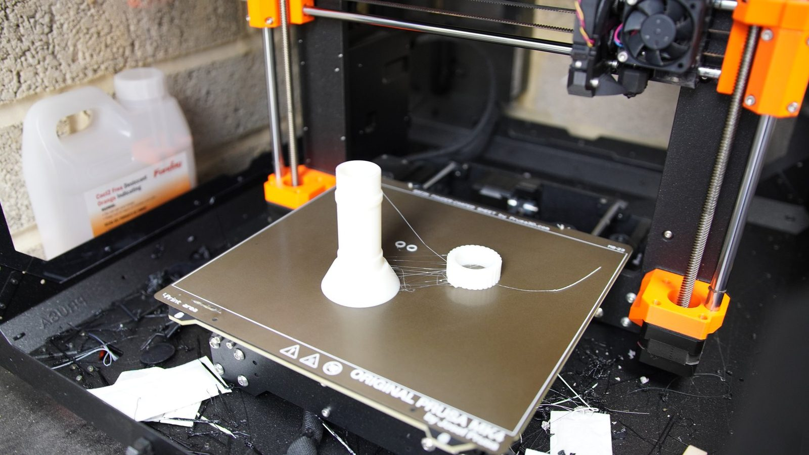
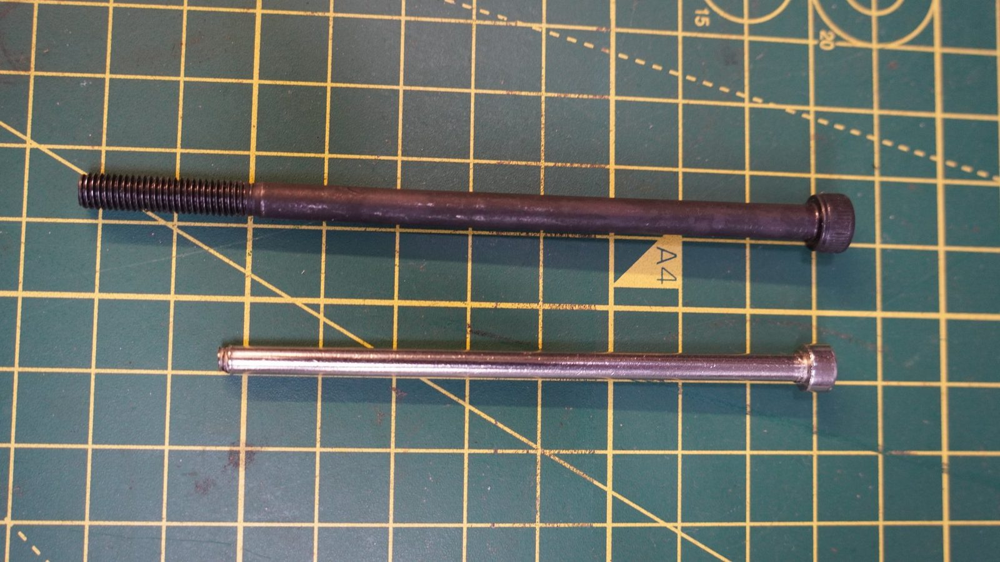
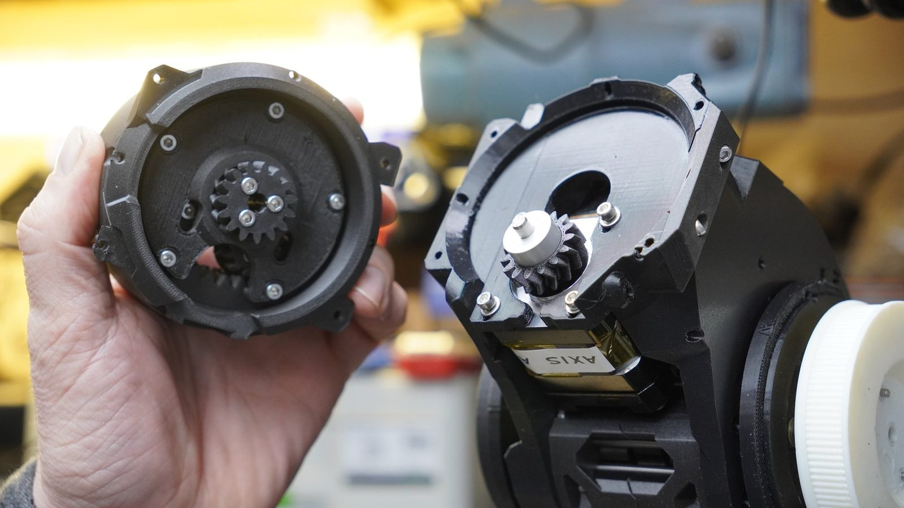
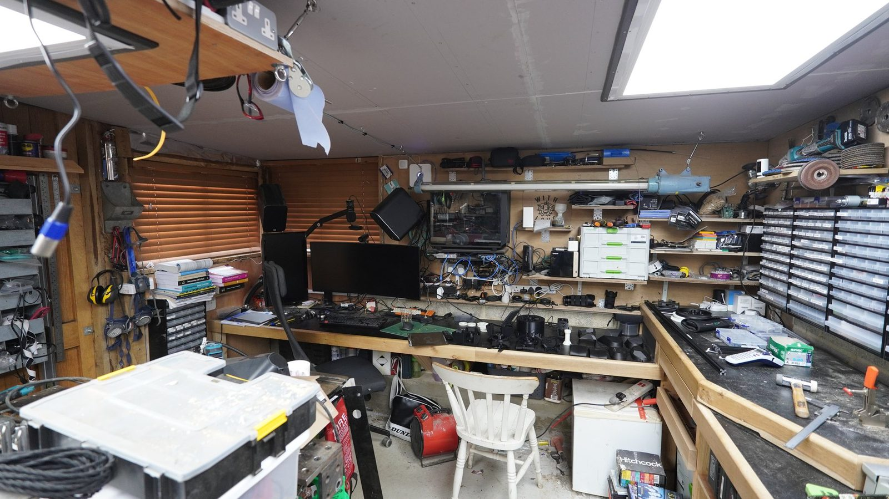
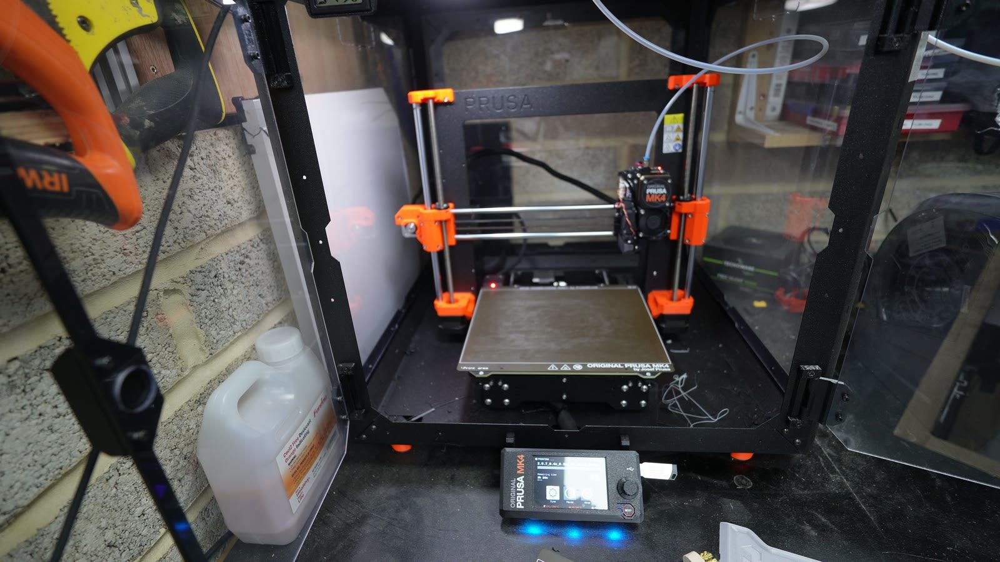
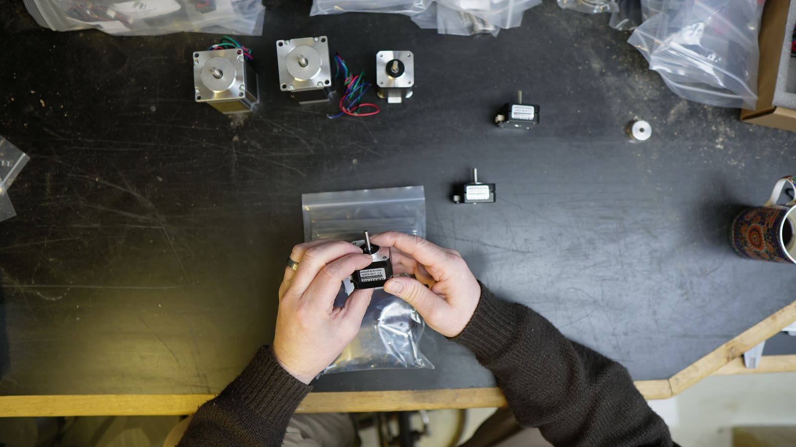
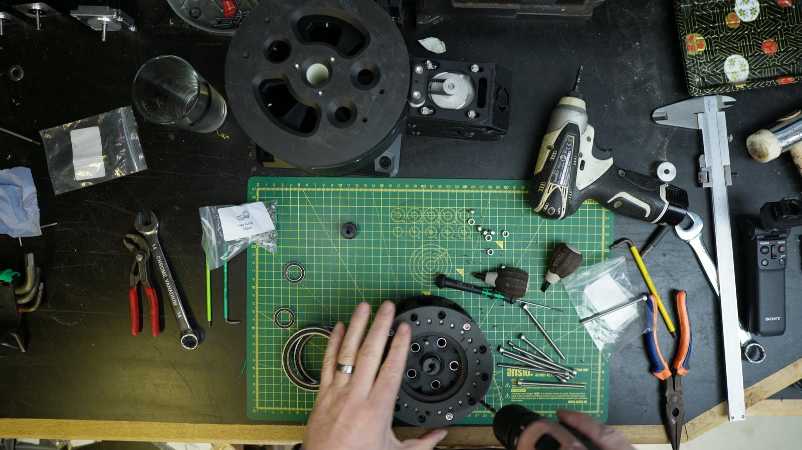
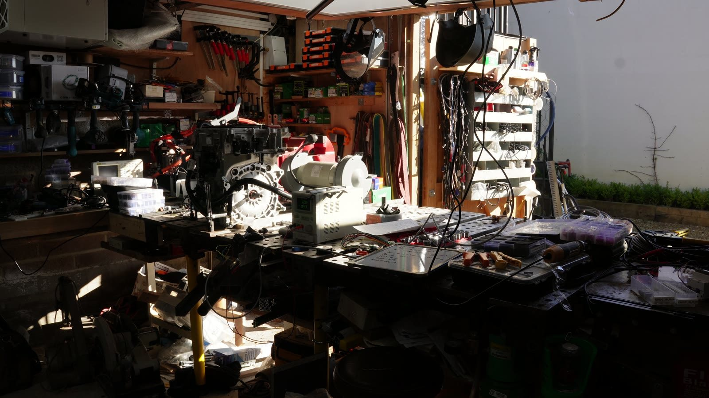
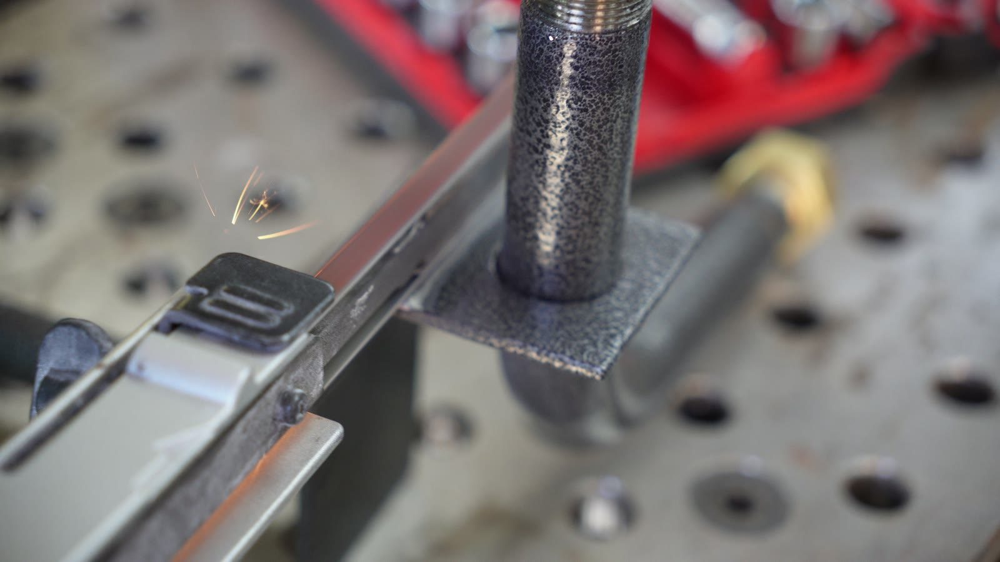
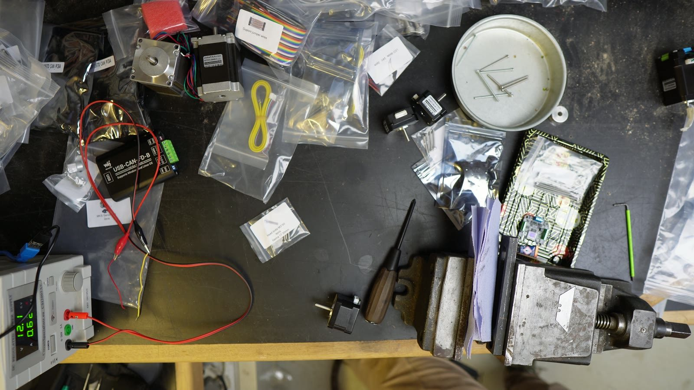